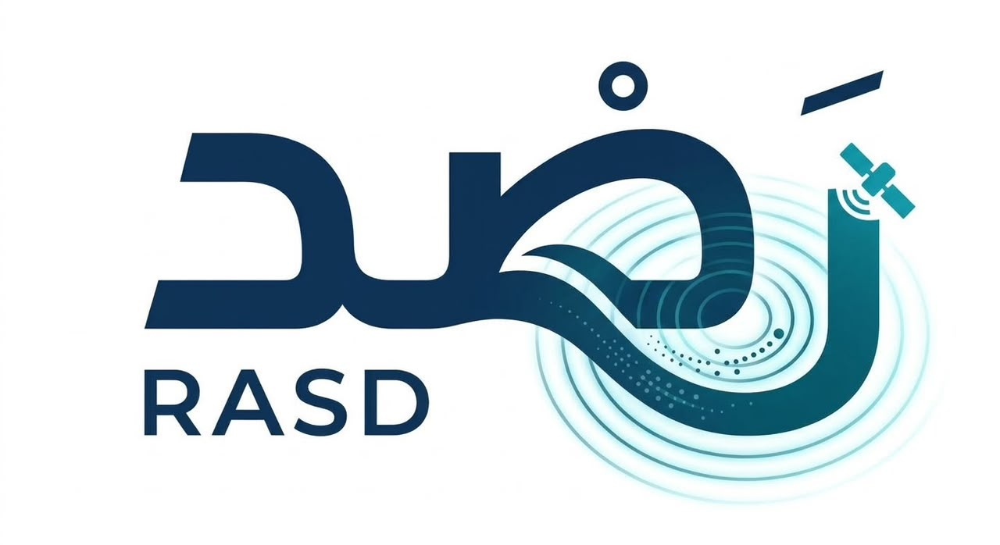

RASD | رَصْدSpace Command & Control Operations Dashboard منصة غرف القيادة والسيطرة الفضائية

RASD | رَصْدAn integrated early wildfire prediction system fusing NASA satellite data (FIRMS & GIBS) with ground IoT sensor nodes to save lives and calculate dynamic safe evacuation routes. نظام ذكي متكامل للتنبؤ المسبق بحرائق الغابات عبر ربط بيانات الأقمار الصناعية NASA FIRMS & GIBS بحساسات إنترنت الأشياء الميدانية لحماية الأرواح وتوفير مسارات إجلاء آمنة.
RASD employs a dual-sensing infrastructure combining NASA's orbital satellite coverage with ground IoT validation nodes to predict fire behavior and plot dynamic safe escape routes in real time before disaster strikes. تعتمد منصة رَصْد على بيئة استشعار مزدوجة تجمع بين التغطية الفضائية العريضة لخوادم ناسا والتحقق الميداني الفوري عبر عقد إنترنت الأشياء لحساب مسارات الإجلاء الآمنة لحظياً.
Real-time orbital thermal scanning capturing early fire anomalies from an 824km orbit altitude.
Ground microcontrollers (ESP32/MQ-135) validating smoke and carbon emissions via LoRaWAN.
Capturing early thermal anomalies instantly through NASA VIIRS & MODIS satellites at 375m resolution.
Cross-verifying carbon emissions and smoke levels with satellite data to eliminate false alarms.
Calculating optimal green escape corridors away from smoke vectors and fire fronts automatically.
Early warning time saved before fire reaches populated sectors.
Connection: LoRaWAN ➔ NASA Earthnet Validation
Connection: LoRaWAN ➔ NASA Earthnet Validation
Real-time analysis based on active wind vector, velocity, and regional dryness.
Optimized routing algorithm designed to guide rescue teams and citizens away from fire vectors.